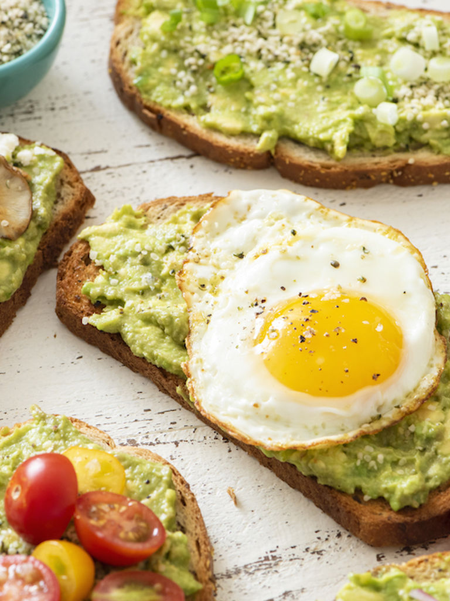

Avocado Toast

Description
Avocado toast is a top choice when it comes to breakfast foods. Made with three ingredients, it is a fast and easy way to fuel your mornings. In addition to being simple to make, the dish is quite healthy since it is made with avocados, which are superfoods.
Ingredients
- 1 slice of bread
- 1 small avocado
- 1 egg
- Chipotle aioli (Optional)
Steps
- Toast the slice of bread.
- Slice or mash the avocado.
- For a bit of spice, spread some chipotle aioli on the toasted bread (optional).
- Spread the avocado onto the toast.
- Fry the egg and place it on top of the avocado toast.
- Enjoy!